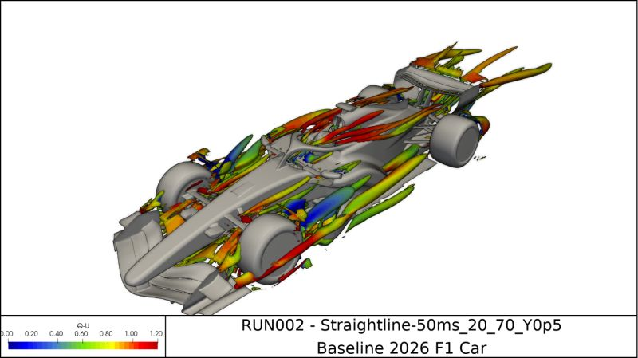

Foundation Year Engineering Conference Project
| Table of Contents |
|---|
| Abstract |
| Introduction |
| Analysis and Discussion |
| References |
This paper investigates the engineering trade-off between drag and downforce in Formula 1. Aerodynamic design is a critical factor in vehicle performance because increasing downforce improves grip and cornering ability, while increasing drag can reduce maximum speed on straights. The paper examines the principles behind these aerodynamic forces and discusses how Formula 1 teams seek an optimal balance to maximise overall lap time performance.
Formula 1 is widely regarded as one of the most technologically advanced motorsports in the world. Modern Formula 1 cars rely heavily on aerodynamic performance to achieve high speeds while maintaining stability and grip. Two important aerodynamic forces are drag and downforce. Downforce pushes the vehicle towards the track surface, increasing tyre grip and improving cornering performance. Drag acts as air resistance, limiting acceleration and top speed. Engineers must therefore balance these competing effects when designing a Formula 1 car.
Aerodynamics has become one of the most influential areas of Formula 1 engineering. Teams invest significant resources into wind tunnel testing and computational fluid dynamics (CFD) simulations to optimise airflow around the vehicle. Small aerodynamic improvements can have a major impact on lap times, making the study of drag and downforce essential to competitive performance.

Downforce is an aerodynamic force that pushes a Formula 1 car towards the track surface. Increased downforce improves tyre grip and allows drivers to corner at higher speeds. Modern Formula 1 cars generate downforce through front wings, rear wings and floor aerodynamics. This aerodynamic grip is often more significant than the mechanical grip generated by the tyres alone.
The shape of aerodynamic components is carefully designed to manage airflow around the vehicle. Front wings direct air towards other parts of the car, while the floor generates downforce through ground-effect aerodynamics. These systems work together to improve handling and stability during high-speed cornering.
Drag is the aerodynamic resistance created when a Formula 1 car moves through air at high speed. The greater the drag force acting on the vehicle, the greater the reduction in acceleration and maximum straight-line speed. Components such as front wings, rear wings and other aerodynamic devices can increase drag while generating downforce. Engineers therefore attempt to reduce unnecessary drag while maintaining sufficient levels of grip and stability.
Reducing drag is particularly important at circuits with long straights, where top speed can significantly affect lap times. Engineers often adjust wing angles and aerodynamic components to minimise resistance while maintaining enough downforce for safe and effective cornering.
Formula 1 engineers must balance the advantages of increased downforce against the disadvantages of aerodynamic drag. A high-downforce setup provides excellent cornering performance but reduces top speed on straights. Conversely, a low-drag setup allows greater straight-line speed but may reduce grip through corners. As a result, teams select different aerodynamic configurations depending on the circuit characteristics. Technical tracks such as Monaco favour higher downforce, whereas faster circuits such as Monza often require reduced drag levels.
The optimal aerodynamic setup varies between circuits. Engineers must evaluate factors such as corner speed, straight length and tyre performance when selecting a configuration. This demonstrates how aerodynamic design involves balancing competing requirements rather than maximising a single performance characteristic.
Formula 1 teams adjust aerodynamic configurations according to circuit requirements. Tracks such as Monaco contain many slow-speed corners and therefore favour high-downforce setups to maximise grip. In contrast, circuits such as Monza contain long straights where lower drag becomes more important for achieving higher top speeds. Engineers therefore select different wing configurations and aerodynamic settings depending on the demands of each circuit.
| Setup Type | Downforce | Top Speed |
|---|---|---|
| High Downforce | High | Lower |
| Medium Downforce | Medium | Medium |
| Low Downforce | Lower | Higher |
Formula 1 (2025) Technical Regulations. Available at:
https://www.formula1.com
(Accessed: 26 October 2026).
FIA (2025) Formula One Technical Regulations. Available at:
https://www.fia.com
(Accessed: 26 October 2026).
Racecar Engineering (2025) Aerodynamics and Downforce in Motorsport. Available at:
https://www.racecar-engineering.com
(Accessed: 26 October 2026).